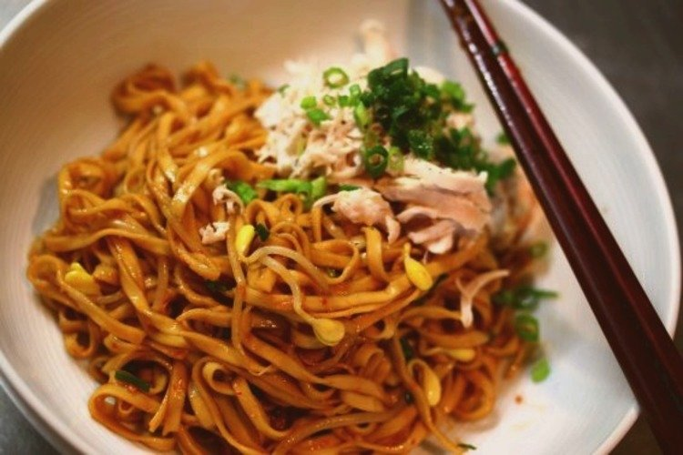

Instructions
Fried Minced Meat:
-
Heat the pan with the tablespoon of olive oil. Add the garlic and fry
till it just turns a slight tinge of brown.
-
Add the minced meat and fry till cooked. Remember to break it up to
small pieces.
-
Add the different sauces and fry, on medium-low heat, till all the
liquid reduces.
-
Stirring occasionally. Add the button mushroom till it’s incorporated.
Stewed Mushroom:
-
Soak the dried chinese mushrooms in warm water till completely soft
for 15 mins. When soft, slice mushrooms to required thickness. Do not
throw the water left after you take the mushrooms out.
-
Squeeze out the water of each mushroom, and cut it into relatively
thin slices.
-
Heat 1 tsp of oil in a heavy-based pan. Add the slices ginger and fry
till tender.
- Add the mushrooms and fry till fragrant.
-
Add the oyster sauce and a few tablespoons of water (from the
mushrooms) cook under medium-low heat and allow the mushrooms to
absorb the liquid (plumping it up in the process)
-
Keep adding water (at least 2 more additions) and allow it to cook
over low heat for at least 30mins. so that it’s soft and tender. and
bursting with flavour!
Noodles:
(Best advised to do one at a time)
-
In a large bowl, put the chilli oil, oyster sauce, vinegar and fish
sauce and mix till incorporated.
-
Cook noodles accordingly and when done – plunge it into a bowl of cold
water. This stops the noodles from cooking further. Then return to the
hot water for a few seconds before putting into the serving bowl with
sauce.
-
In another pot, boil the fishballs, fish cakes and bean sprout till
they are are floating (takes about 5-8mins)
Plating:
-
Once the rice noodles are done, pour it into the bowl and mix it well
with the sauces.
- To make sure each strand is coated well with the sauces.
- Place the fishballs, fish cakes and bean sprout on the noodles.
-
Put a few pieces of the stewed mushroom in the bowl and top everything
up with the minced meat.
- Sprinkle with fried shallots and spring onion.
Note: Coriander can also be used for garnishing.
